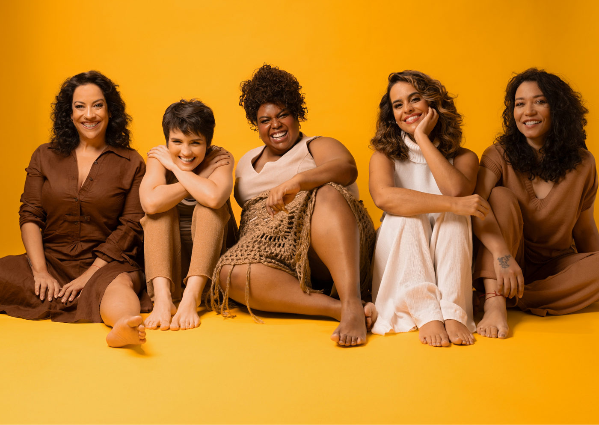

Musical idealizado por Eline Porto faz apresentações no Rio de Janeiro e em Minas Gerais

Nos dias 28 e 29 de outubro o espetáculo estará no Teatro do Centro Cultural Usiminas em Minas Gerais. Depois disso o musical faz uma pausa, e retorna aos palcos para uma curta temporada no Rio de Janeiro, dos dias 10 de janeiro ao dia 08 de fevereiro, no Teatro Clara Nunes.
Movida por sua paixão por narrativas e impulsionada por uma conexão com as mulheres de sua família, Eline embarcou, nos últimos três anos, na jornada de compreender as raízes e os caminhos trilhados pelas gerações que a precederam. E o resultado é um musical inédito, a celebração da resiliência feminina, contada através de mais de 20 músicas, o que inclui sucessos de nomes como Gal Costa, Rita Lee e Elza Soares, com arranjos vocais exclusivos.
Com uma equipe criativa majoritariamente feminina, o espetáculo conta com a direção de Stella Maria Rodrigues e a assistência de Renata Ghelli. A direção musical e os arranjos são liderados por Claudia Elizeu e Erica de Paula.
Juliana Gama assume a direção de movimento, já a iluminação, foi confiada a Adriana Ortiz, a cenografia pensada por Beto Sargentelli, que esteve ao lado de Eline em duas produções nos últimos meses. O design de som, realizado por João Paulo Pereira, promete criar um ambiente sonoro envolvente. Já o visagismo fica por conta de Marcos Padilha, enquanto o figurino é assinado por Kátia Gimenez e a direção de arte por Gustavo Perrella.
“Por Elas - Um Musical sobre a força do canto feminino” - Dias 28 e 29 de Outubro às 20h no Teatro do Centro Cultural Usiminas com ingressos já disponíveis via Sympla. E Temporada Rio de Janeiro dos dias 10 de Janeiro ao dia 08 de Fevereiro, às terças e quartas feiras, sem horários ou ingressos disponíveis até o momento.